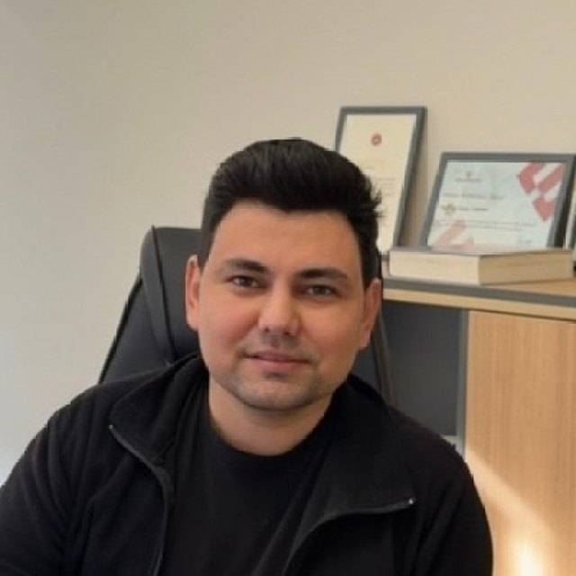

Scenario-robust gate assignment with real-time surface scheduling
A generalizable two-stage framework for uncertainty-aware airside operations.
2027 · Vol. 194
DOI
Research in air traffic management and airport operations, built on optimization, decision support and machine learning.
Özdemir Bayraktar Faculty of Aeronautics and Astronautics

Citation metrics · Google Scholar · updated August 2026
I earned my Bachelor’s degree in Aircraft Avionics Maintenance from Kocaeli University in 2015, gaining foundational knowledge in avionics systems. In 2016, I began a Master’s in Air Traffic Control (ATC) at Anadolu University, researching how organizational practices affect aviation incidents. This work underscored the impact of operational and management factors on safety, earning me the Master’s Thesis Success Award (best MS thesis). From 2017–2018, as a Research Assistant at Anadolu University, I contributed to academic and national ATM projects, expanding my expertise.
Aircraft Maintenance & Repair Department, Samsun University. Founder & Co-Director of DARE Lab.
Eskişehir Technical University — Graduate School of Education
Thesis: "Multi-objective stochastic programming model for runway scheduling problem in multi-runway airports with parallel point merge system"
Advisors: Cem Çetek & Onur Kaya
Anadolu University — Graduate School of Sciences
Thesis: "The relationship between operation and organization in 21st century aviation incidents: HFACS application"
Advisor: Dr. Suat Uslu
Kocaeli University — School of Civil Aviation
Robust airside operations, gate assignment and data-driven aircraft sequencing, published in leading transportation and AI journals.
A generalizable two-stage framework for uncertainty-aware airside operations.
A systematic literature review.
Dönmez K., Ali H., Pham D.-T., Alam S. (2027). Scenario-robust gate assignment with real-time surface scheduling: A generalizable two-stage framework for uncertainty-aware airside operations. Transportation Research Part C: Emerging Technologies, 194(Part A), 105990.
DOIDönmez K., Ali H., Gulzar S., Alam S. (2026). Policy-based Bayesian-MILP optimization framework for airport departure sequencing under uncertainty. Transportation Research Interdisciplinary Perspectives, 39, 102206.
DOIAli Hasnain, Dönmez K., Lim Wei Lun, Alam Sameer (2026). Machine learning algorithms and models for airport gate assignment problem: A systematic literature review. Transportation Research Part E: Logistics and Transportation Review, 209, 104734.
DOIAygün H., Dursun Ö.O., Dönmez K., Şahin O., Toraman S. (2026). Forecasting efficiency parameters of an experimental turbojet engine by a hybrid deep learning approach. Environmental Progress & Sustainable Energy.
DOIDönmez K., Bakır M., Çeçen R.K. (2026). A comprehensive data-driven MCDM approach to determine the best single objective function for the aircraft sequencing and scheduling problem. Expert Systems with Applications, 296.
DOIDönmez K., Şahin O. (2026). Matheuristic strategy development and benchmarking for explainable and efficient aircraft departure sequencing. The Aeronautical Journal, 1-26.
DOIKilic U., Aygun H., Kirmizi M., Dönmez K., Sahin O. (2026). Performance searching of an experimental micro turbojet engine via modeling-based optimization approaches. Journal of Thermal Analysis and Calorimetry, 1-15.
DOIDönmez K. (2025). Algorithm-based runway configuration management: A comprehensive ADS-B data analysis. Journal of Traffic and Transportation Engineering (English Edition).
DOIDönmez K. (2025). Efficiency-Based Airport Ground Conflict Detection and Resolution: Integrating Stand Hold Strategy with Constrained Position Shifting. International Journal of Aeronautical and Space Sciences, 26(4), 1912-1938.
DOIKaçar E., Aybek Çetek F., Dönmez K. (2025). Analysing complexity in approach control units of metroplex airspaces: insights from air traffic controllers. The Aeronautical Journal, 129(1336), 1665-1682.
DOIDönmez K., Tükenmez İ., Çeçen R.K. (2025). A novel stochastic matheuristic approach for the dynamic utilisation of arrival route structures: modelling of Istanbul Airport point merge system. The Aeronautical Journal, 129(1331), 240-259.
DOIAygün H., Dursun Ö.O., Dönmez K., Şahin O., Toraman S. (2024). Prediction of performance characteristics of an experimental micro turbojet engine using machine learning approaches. Energy, 313, 133997.
DOIDönmez K. (2024). The operational dynamics of end-around taxiways: Insights from Istanbul Airport. Case Studies on Transport Policy, 18, 101303.
DOIDönmez K. (2024). Airport Ground Optimizer (AGO): A decision support system initiative for air traffic controllers with optimization and decision-aid algorithms. Journal of Air Transport Management, 119, 102648.
DOIÖzdemir M., Dönmez K., Demirel S. (2023). Determining the Key Factors Affecting Pseudo-Pilot Workload Based on Real-Time Simulations. Transportation Research Record, 2677(7), 718.
DOIDönmez K. (2023). Evaluation of the Trade-Off between Ground Delays and Intersecting Departures under Various Pilot Acceptance Rate Scenarios. Transportation Research Record, 2677(7), 733.
DOIDönmez K. (2023). Aircraft sequencing under the uncertainty of the runway occupancy times of arrivals during the backtrack procedure. The Aeronautical Journal, 127(1310), 562-580.
DOIDönmez K. (2023). Evaluation of the performance of the multi-objective scalarization methods for the aircraft sequencing and scheduling problem using multi-criteria decision making. Aircraft Engineering and Aerospace Technology, 95(4), 501-511.
DOIMaraş E.E., Dönmez K., Emecen Y. (2023). GIS-Based Determination of the Optimal Heliport and Water Source Locations for Forest Fire Suppression Using Multi-Objective Programming. Aerospace, 10(3), 305.
DOIDönmez K., Aydoğan E., Çetek C., Maraş E.E. (2023). The Impact of Taxiway System Development Stages on Runway Capacity and Delay under Demand Volatility. Aerospace, 10(1), 6.
DOIYazgan E., Aybek Çetek F., Şimşek D., Ata N., Erginel N., Tuncer S., Karabayrak B., Aydın A., Dönmez K., Yıldızlar Ç., Toktay T. (2022). Hava Trafik Kontrolörü Adaylarının Gerçek Zamanlı Simülasyon Senaryolarındaki Hata Sayıları ve Performans Skorlarının İncelenmesi. Uluslararası Mühendislik Araştırma ve Geliştirme Dergisi, 14(3), 87-97.
DOIDönmez K. (2022). A stochastic sequence planning model for the runways with multiple exits. Journal of Intelligent Transportation Systems and Applications, 5(2), 89-101.
DOIDönmez K., Çetek C., Kaya O. (2022). Air traffic management in parallel-point merge systems under wind uncertainties. Journal of Air Transport Management, 104, 102268.
DOIDönmez K., Çetek C., Kaya O. (2022). Aircraft Sequencing and Scheduling in Parallel-Point Merge Systems for Multiple Parallel Runways. Transportation Research Record, 2676(3), 108-124.
DOIDönmez K., Demirel S., Özdemir M. (2020). Handling the pseudo pilot assignment problem in air traffic control training by using NASA TLX. Journal of Air Transport Management, 89, 101934.
DOIDönmez K., Uslu S. (2020). The effect of management practices on aircraft incidents. Journal of Air Transport Management, 84, 101784.
DOIDönmez K., Uslu S. (2018). İnsan Faktörleri Analiz ve Sınıflandırma Sistemi'nin (HFACS) Literatürde Yaygın Kullanımının Değerlendirilmesi. Journal of Aviation, 2(2), 156-176.
DOIDönmez K., Uslu S. (2018). The Relationship Between Flight Operations and Organizations in aircraft incidents; The Application of HFACS. Anadolu University Journal of Science and Technology A, 19(2), 316-333.
DOIDönmez K. (2017). Türk Hava Sahasında Meydana Gelen Ölümcül Uçak Kazalarına İnsan Faktörleri Analiz ve Sınıflandırma Sisteminin (HFACS) Uygulanması. The Journal of Academic Social Science Studies, 6(59), 229-253.
DOIUslu S., Dönmez K. (2016). Geçmişten Günümüze Havacılık Kazalarının Sebeplerindeki Değişimler Üzerine Bir İnceleme. The Journal of Social Sciences, 3(9), 222-239.
DOIDönmez K., Uslu S. (2016). Havacılıkta İletişim Kaynaklı Kaza ve Olaylar Üzerine Bir İnceleme. The Journal of International Social Research, 9(45), 1074-1079.
DOIAygün H., Dönmez K., Dursun Ö.O., Toraman S., Şahin O. (2025). Validating and modeling of metrics of micro turbojet engine by experimental and ML methods. ICPIS 2025, 250-260.
Dönmez K. (2024). Airport Ground Optimizer (AGO). SESAR Innovation Days 2024. (Poster)
Dönmez K., Çeçen R.K. (2023). A Brief Assessment of Aircraft Fuel Consumption and Pollutant Emissions for Departure Operations. ISSA-2023, 11-17.
Dönmez K. (2023). Assessing the Effects of Ground Delay Strategies on Fuel Consumption and Total Delay in Airport Ground Management. 3rd International Black Sea Modern Scientific Research Congress, 458-459.
Dönmez K., Kaplan Z., Aybek Çetek F., Rogosic T., Juricic B., Francetic I. (2022). Service Quality and Efficiency-Oriented Training Design in ATM. ZIRP 2022, 64, 345-355.
DOIDönmez K., Çeçen R.K. (2022). Fuel Optimal Aircraft Conflict Resolution under Various Wind Characteristics. ISATECH-2022.
Çeçen R.K., Dönmez K. (2022). Fuel efficient flight level assignments under wind uncertainties for the conflict resolution problem at the en-route phase. ISSA-2022, 73-84.
Dönmez K., Çeçen R.K. (2022). Comparison of the speed change and vector maneuver techniques for the conflict resolution problem: Fuel and flight time analysis. ISEAS 2022, 71-78.
Özdemir M., Dönmez K., Demirel S. (2020). A Pseudo-Pilot Workload Assessment Tool Based on NASA-TLX. SESAR Innovation Days 2020. (Poster)
Çetek C., Juricic B., Fuerle T., Antulov-Fantulin B., Frost P., Aybek Çetek F., Kaplan Z., Dönmez K. (2019). ATCOSIMA PROJECT: Integrated ATC Radar-Flight Deck Simulations. SESAR Innovation Days 2019. (Poster)
Aybek Çetek F., Antulov-Fantulin B., Frost P., Dönmez K., Kaplan Z., Rogosic T. (2019). Project ATCOSIMA: Preliminary Results and Analysis of Real-Time ATC and Flight Cockpit Simulations. ZIRP 2019, 11-22.
Uslu S., Dönmez K. (2017). Hava Trafik Kontrol Bölümü Öğrencilerinin Teori ve Uygulama (Simülasyon) Dersleri Başarılarının Karşılaştırılması. 1st Int. Symposium on Educational Sciences, 642-650.
Dönmez K., Uslu S. (2017). Türk Hava Sahasında Meydana Gelen Ölümcül Uçak Kazalarına HFACS Uygulanması. 2nd ASOS Congress.
In: Innovative Approaches in Social, Human and Administrative Sciences (2018). Uslu S., Dönmez K. — Gece Publishing. ISBN: 978-605-288-787-5
Uslu S., Dönmez K. (2017). Mehmet Akif Ersoy Üniversitesi Sosyal Bilimler Enstitüsü Dergisi, 9(18), 271-287.
DOIAssociate Editor — DergiPark. November 2025 – December 2025.
Citation data last updated: August 2026
Journal articles vs conference proceedings by year
Most frequent publication venues
Yearly citations from Google Scholar
Total publications over time
Journal articles only (excl. proceedings)
Distribution across publication categories
First+Single author & co-author ratio
Funding, budget, and role distribution across 11 research projects
Budget allocation per project (log scale)
An AI-powered drone platform with RGB, thermal and LiDAR sensing that detects aircraft surface damage in the hangar and tracks it over time on a 3D digital twin.
Researcher — PI: Mehmet Talha Tınastepe. With Muammer Türkoğlu, Sema Gül, Mehmet Mürsel Uçar, and Alaaddin Bağceçi; advisors Erdem Emin Maraş, Hakan Aygün, and Ömer Osman Dursun. Partners: AEROCODE, ADAPHA, and 3M Havacılık. Oct 2026 – Mar 2028.
Project Expert — Coordinator: Dr. Mustafa Özdemir. With Öznur Usanmaz, Nuray Gedik, Özlem Şahin, and Mehmet Ali Işıkoğlu.
PI: Kadir Dönmez — with Suat Toraman, Hakan Aygün, and Ömer Osman Dursun. Apr 2025 – 2026.
Researcher — PI: Harun Karakavuz. With Mehmet Yaşar, Kasım Kiracı, Ahmet Ertek, Mahmut Bakır, Selçuk Kayhan, and Ümit Doğan. Since Sep 2023.
Researcher — PI: Hakan Aygün. Machine learning + meta-heuristic optimization. Nov 2024 – Dec 2025.
Scholar — PI: Ebru Yazgan. With Fulya Aybek Çetek, Seçkin Tuncer, Nazım Ata, Nihal Erginel, Ahmet Aydın, Barış Karabayrak, Çağla Yıldızlar, and Tuğçe Toktay. Dec 2021 – Dec 2022.
Researcher — PI: Cem Çetek. With Zekeriya Kaplan, Fulya Aybek Çetek, Ramazan Kürşat Çeçen, Emre Aydoğan, Bruno Antulov Fantulin, Paul Frost, Tea Rogosic, Biljana Juricic, Thomas Feuerle, and Tomislav Radisic. Sep 2017 – Oct 2020.
Researcher — PI: Cem Çetek. With Onur Kaya. Dec 2020 – Jun 2022.
Researcher — PI: Suat Uslu. Feb 2018 – May 2018.
Researcher — PI: Suat Uslu. Jun 2017 – Jun 2018.
Researcher — PI: Suat Uslu. Jun 2016 – Sep 2017.
"For the support and contributions to the recognition of our university in the field of aviation and space sciences, as well as the effort and dedication in educating students."
Recognition for outstanding publication performance at Eskisehir Technical University.
Award for excellence in master's thesis work at Eskisehir Technical University.
NumPy, Pandas, Matplotlib, Seaborn, Scikit-learn, Scipy — Python
pymoo — Balancing Objectives, Finding Solutions
CPLEX, IPOPT, COUENNE — LP, NLP, IP
CPLEX, Gurobi, Pyomo — Operations Research
Decentralized Aviation Research & Education Lab — a global, decentralized non-profit community of ambitious young and high-caliber researchers dedicated to top-quality scientific outputs across the aviation ecosystem, spanning air transport, ATM, airport operations, safety, and sustainability.
I am the Founder & Co-Director of DARE Lab, responsible for Education & Community development within the network.
Post-doctoral research at the Air Traffic Management Research Institute, Nanyang Technological University. Focused on ATM, Machine Learning, and Optimization research.
Member of the "CA24122 - multiscale Stochastics, Patterns, and Analysis of Combinatorial Environments (mSPACE)" Action Working Group.
For research collaborations, student supervision and project inquiries, email is the fastest way to reach me.
kadir.donmez@samsun.edu.trGathering charts, rendering graphics, mapping DOIs...